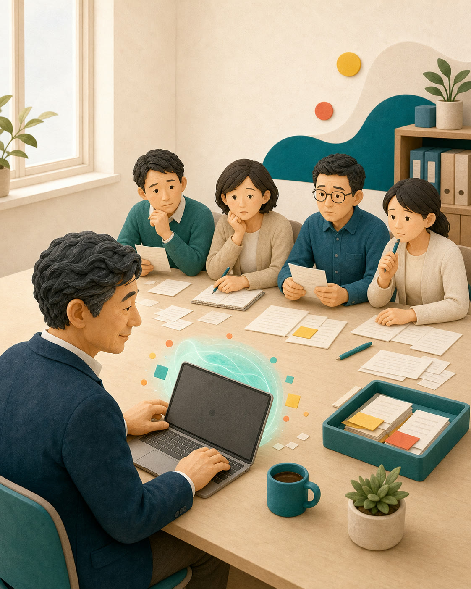
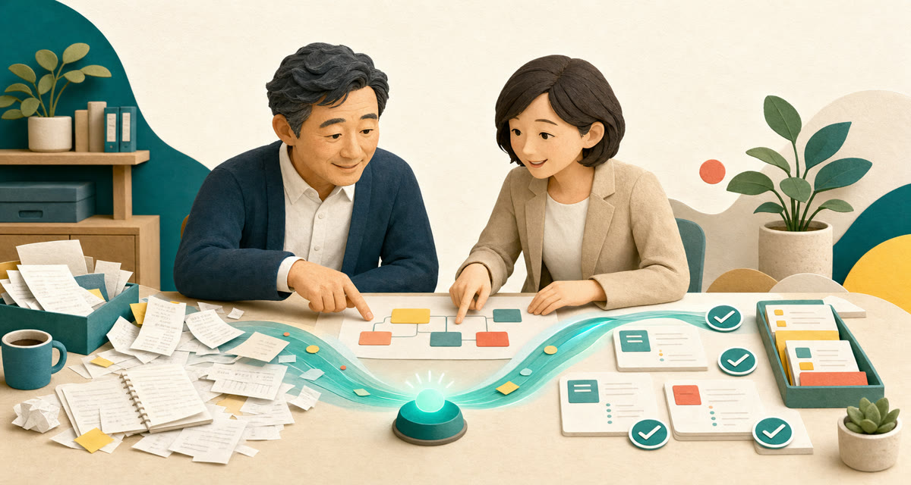
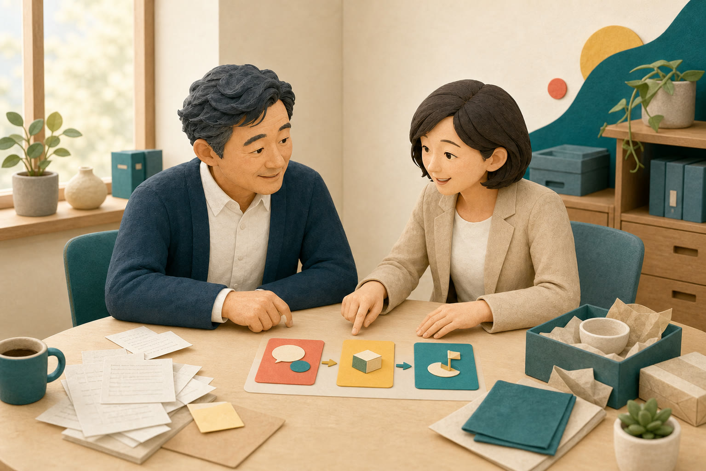
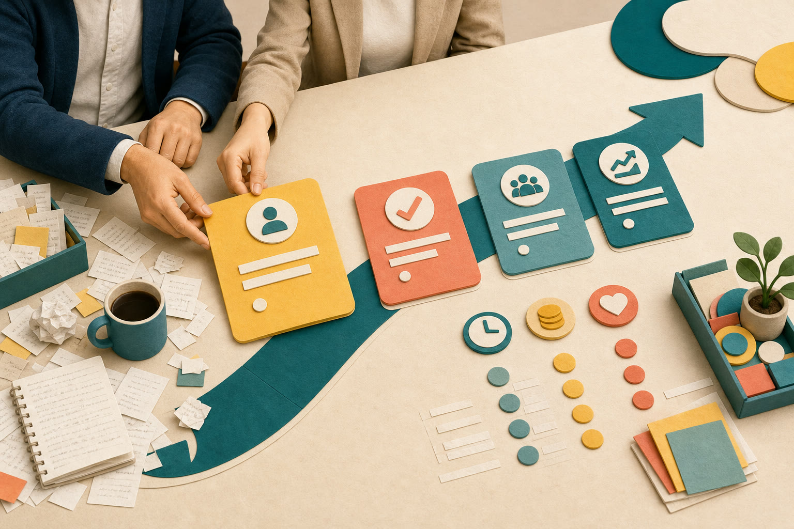
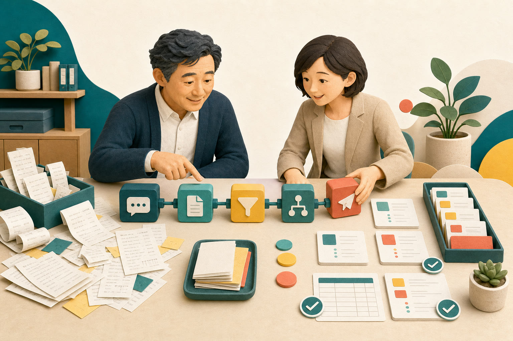
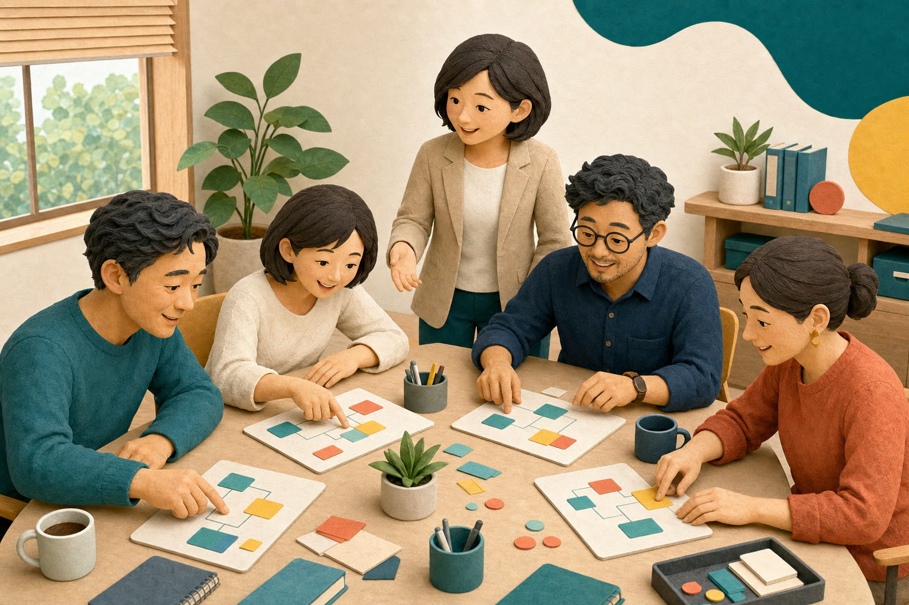
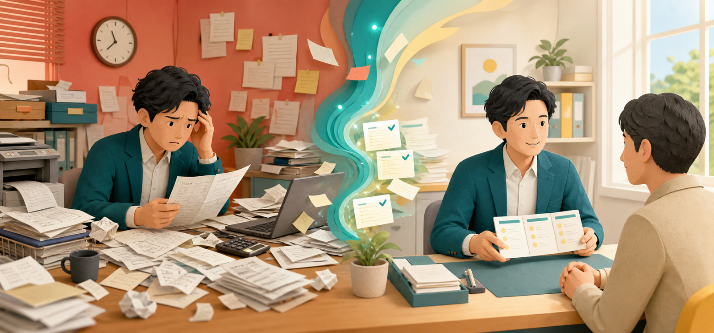
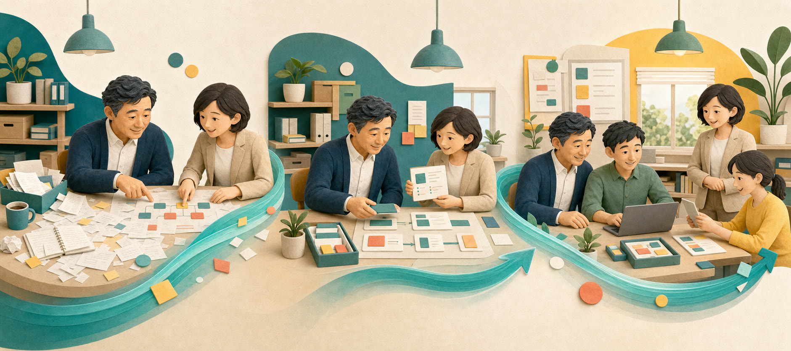
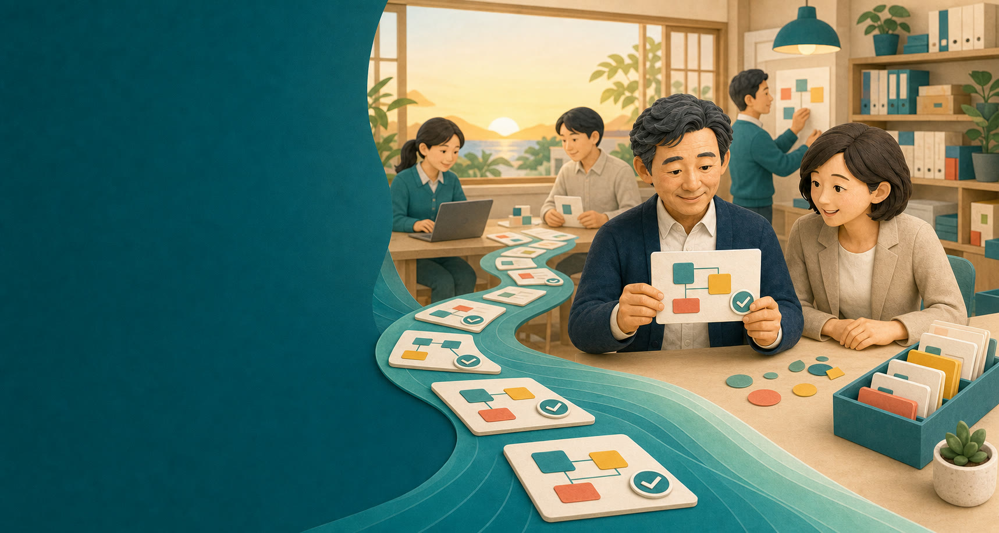

01
毎日の紙仕事に、時間が消えていく。
見積書、転記、返信、集計。重要だけれど、毎回ゼロから人がつくっている。
何を選ぶか。どこから始めるか。どう社内に残すか。相談・設計・実装・定着まで、会社の外のAI推進チームが一緒に進めます。
オンライン対応・全国どこからでも。診断後の判断は自由です。
作る・探す・写す・まとめる。その下ごしらえをAIに任せ、人は判断・接客・提案へ。AI顧問室がつくるのは、派手な未来ではなく、明日から少しずつ楽になる会社の仕組みです。
技術がないことより、選ぶ基準と進める順番がないことが、会社のAI活用を止めています。
見積書、転記、返信、集計。重要だけれど、毎回ゼロから人がつくっている。

手応えはある。でも社員への広げ方、ルール、研修のつくり方が分からない。
ツール、業者、補助金。自社の利益に効く判断基準がほしい。

AI顧問室はアドバイスだけの先生ではありません。経営の相談相手であり、実際につくる人であり、社員が使えるようにする伴走者です。
担当が変わるたびに話が戻ることはありません。同じ責任者が、判断から現場まで見続けます。

01チャットと定例で、経営と現場の疑問をいつでも相談。専門用語ではなく、利益・時間・お客様への影響で答えます。

02業務を棚卸しし、成果の大きさ・難しさ・定着しやすさを比べて優先順位を決定。会社の現在地に合う一段だけを選びます。

03既製の道具で足りるなら選定・設定。足りない部分だけ、御社の書式とルールに合わせて直接構築します。

04安全な使い方から実務演習まで。社員が自分の仕事用AIを考え、改善できる状態をつくります。ゴールは依存ではなく自走です。

すべて登録不要。御社向けに何がつくれるかを、まず体験できます。
最初の3ヶ月の動きを先にお見せします。

税別・最低契約期間3ヶ月
単発：AI研修50万円〜／導入・自動化80万円〜
 相談から実装まで直接担当
相談から実装まで直接担当相談責任者は経営歴15年。複数事業の立ち上げ・拡大に携わりながら、AIによる業務改善とシステム開発を自ら実践してきました。
流行の道具ではなく、売上・コスト・時間に効くかを基準に判断。初回相談から設計、実装、研修、定着まで同じ責任者が対応します。
問題ありません。そのような会社のためのサービスです。普段の言葉で説明し、設定や構築もこちらで対応します。
決まっていなくて大丈夫です。時間がかかる仕事や困りごとから、最初に検討すべき候補を一緒に整理します。
はい。業種名ではなく、見積・問い合わせ・集計など「仕事の流れ」を見て活用方法を考えます。
可能です。AI研修50万円〜、業務ツール導入・自動化80万円〜の単発支援も用意しています。
30分で、御社の現在地・AIを使えそうな仕事・最初の一手を整理します。無理な勧誘はありません。

準備する資料はありません。いま困っている仕事を、普段の言葉でお聞かせください。